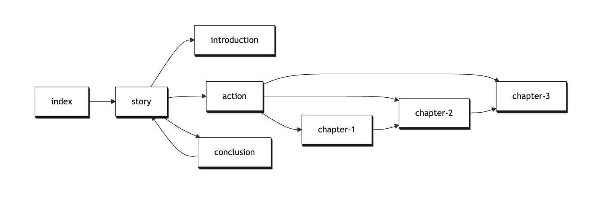

/

On this page
Subdocuments
When referring to a LayerDocs document, we are talking broadly about the group of resources that make up a LayerDocs project.
Commonly, especially in the case of knowledge management and wikis like this one, pages can have links that point to other pages, building a network of interconnected subdocuments.
In LayerDocs, a subdocument’s entry point is a source file that is referenced by another subdocument. In practice, when I do this, I am referring to a subdocument.
Every project consists of at least one subdocument: the main one, called root.
Do not confuse subdocuments with inclusion. See Inclusion vs. subdocuments for a comparison.
Referencing subdocuments
Whenever a Markdown link points to a local .qd or .md file, it is considered a reference to a subdocument.
[My subdocument](file.qd)You can also link to a specific section within a subdocument by appending an anchor:
[Section A of my subdocument](file.qd#section-a)Equivalently, you can use the .subdocument {path} {label?} docs ↗ function:
.subdocument {file.qd} label:{My subdocument}Unlike the link syntax, the function accepts dynamic paths, making it suitable for more complex use cases. For instance, you can use it in combination with .listfiles to automatically link all documents in a directory through a for-each loop:
.foreach {.listfiles {pages} sortby:{date} order:{descending}}
path:
.subdocument {.path} label:{.path::filename}LayerDocs makes sure a file is evaluated only once, so circular and recursive references are handled gracefully.
Context inheritance
When referencing a subdocument, its content is evaluated like an independent LayerDocs document.
A relevant difference is that subdocuments inherit the referrer’s context: document metadata, customizations, functions, variables, and more.
Example 1
main.qd:.doctype {paged} .theme {darko} .pageformat margin:{1cm} .function {greet} Hello! [Introduction](introduction.qd)
introduction.qd:No need to set the document up again, it's already inherited! .greet
Unlike .include, the context is inherited, not shared: changes made in the subdocument do not affect the referrer.
Example 2
The following example produces an error because greet is not defined in the referrer context:
main.qd:[Introduction](introduction.qd) .greet <!-- Error: unresolved -->
introduction.qd:.function {greet} Hello!
Working directory
The working directory of a subdocument is relative to the subdocument’s entry point, not the referrer:
- main.qd
- pages
- introduction.qd
- images
- image.png
Whereas main.qd can reference images/image.png, introduction.qd should reference it as ../images/image.png.
The media storage system can still store media files across subdocuments.
Subdocument graph
Subdocuments are structured in a directed graph, where the edges are the links between them.
You can visualize the graph via the .subdocumentgraph function:

Output
Subdocuments are exported differently depending on the output target.
HTML
Each subdocument is exported as a separate subdirectory in the same directory as index.html.
Configuration resources, such as themes and runtime scripts, are generated only once. Media is stored per subdocument instead.
- MyDocument
- media
- theme
- script
- introduction
- media
- index.html
- conclusion
- media
- index.html
- index.html
Each subdocument is exported as a separate PDF file.
- MyDocument
- index.pdf
- introduction.pdf
- conclusion.pdf
Subdocument links in PDF output are not navigable yet.
If only the root subdocument is present, then only MyDocument.pdf is generated without the need for a directory.
Output naming
By default, subdocument output files are named after their source file name. This behavior can be customized via the --subdoc-naming <strategy> compiler option. This applies to all output targets, such as HTML and PDF.
Example 3
getting-started.qd → getting-started.pdf
Document name
Launching the compiler with --subdoc-naming document-name names each subdocument output after their own .docname, rather than the source file name. If a subdocument does not set .docname, the source file name is used as a fallback. Note that duplicate document names are not handled, and may lead to name collisions and overwritten files.
Example 4
getting-started.qd with .docname {Getting Started} → Getting-Started.pdf
Minimizing name collisions
Since the subdocument output files lie flatly in the same directory, it is possible that two subdocuments with the same name but from different directories end up colliding.
By default, LayerDocs accepts this collision-prone behavior in order to generate human-readable URLs.
If collisions cannot be avoided, launching the compiler with --subdoc-naming collision-proof will append a hash to the output file names.
Example 5
getting-started.qd → getting-started@12345678.pdf